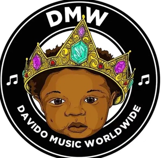

- Book us
- Contact
- About
- News
David Adedeji Adeleke (born November 21, 1992), who is professionally known as Davido, is an American-born Nigerian singer, songwriter and record producer. Davido was born in Atlanta, Georgia, United States, and raised in Lagos, Nigeria; he made his music debut as a member of the group KB International. Davido studied business administration at Oakwood University before dropping out to make beats and record vocal references. He rose to fame after releasing "Dami Duro", the second single from his debut studio album Omo Baba Olowo (2012), from which six additional singles—"Back When", "Ekuro", "Overseas", "All of You", "Gbon Gbon" and "Feel Alright"—were taken. In 2012, Davido won the Next Rated award at The Headies. Between 2013 and 2015, he released the hit singles "Gobe", "One of a Kind", "Skelewu", "Aye", "Tchelete (Goodlife)", "Naughty", "Owo Ni Koko", "The Sound" and "The Money".
In January 2016, Davido announced on Twitter he had signed a record deal with Sony Music and a few months later, he founded the record label Davido Music Worldwide, to which acts Dremo, Yonda and Peruzzi are currently signed. In July 2016, Davido signed a record deal with Sony's RCA Records and in October the same year, he released the five-track Extended Play (EP) Son of Mercy, which was supported by the singles "Gbagbe Oshi", "How Long" and "Coolest Kid in Africa". In April 2017, Davido re-negotiated his contract with Sony due to creative control issues and later that year, he released five singles including "If" and "Fall". "If" generated worldwide social-media activity while "Fall" became the longest-charting Nigerian pop song in Billboard history. Davido released his second studio album A Good Time in November 2019; it was supported by the previously released singles "If", "Fall", "Assurance", "Blow My Mind" and "Risky".
In 2019, New African magazine listed Davido as one of the 100 most-influential Africans. His third studio album A Better Time was released on November 13, 2020, and in February 2021, he appeared on Time magazine's Time 100 Next List. Davido released Timeless, his fourth studio album, on March 31, 2023. He is a cultural ambassador for Nigeria and a prominent voice of human rights in Africa. He is also one of the most-followed African artists on Instagram and Twitter.
Davido Music Worldwide (commonly known as DMW), is a Nigerian record label owned by Afrobeats singer Davido. The label is home to recording acts, such as Dremo, Yonda, Peruzzi, Idowest from Lagos Island, DJ Ecool, Danagog, B-Red, Deekay, May D, Deinde, Ayanfe, Liya, Morravey, and Logos Olori. It also houses producers Fresh vdm and Speroach Beatz. Artists affiliated and formerly signed to the label, include Ichaba, Lola Rae, Lil Frosh, and Mayorkun.
